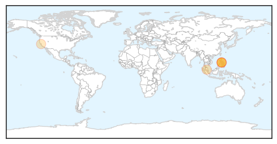

30 Day Trends
Web: 2 alerts, 0 warnings
Twitter: 0 alerts, 0 warnings
Top Articles:
- 0.966
- Two relatives of infected UC Berkeley student have measles, health officials say
- 0.955
- 2 Relatives of Infected UC Berkeley Student Contract Measles
- 0.930
- Two relatives of UC Berkeley student who contracted measles have come down with the disease
- 0.842
- Plane passenger sparks new measles alert
- 0.747
- Relatives Of Infected UC Berkeley Student Diagnosed With Measles « CBS San Francisco
Top Tweets:
-
No tweets found for Feb 28, 2014
Web/News Articles

Tweets

Article Locations
Article Confidences